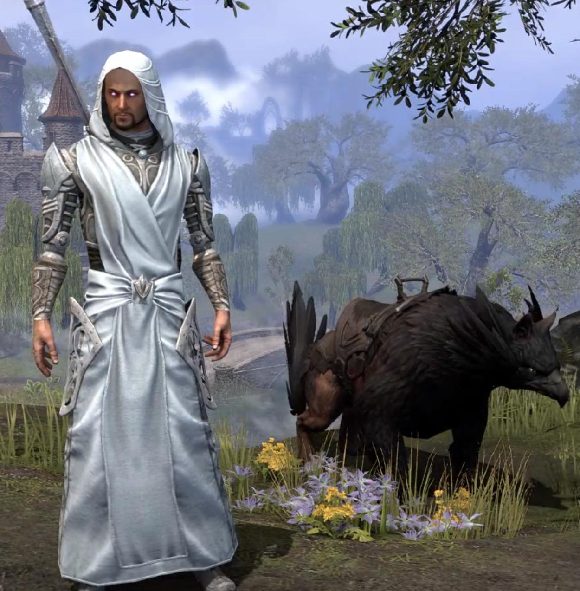
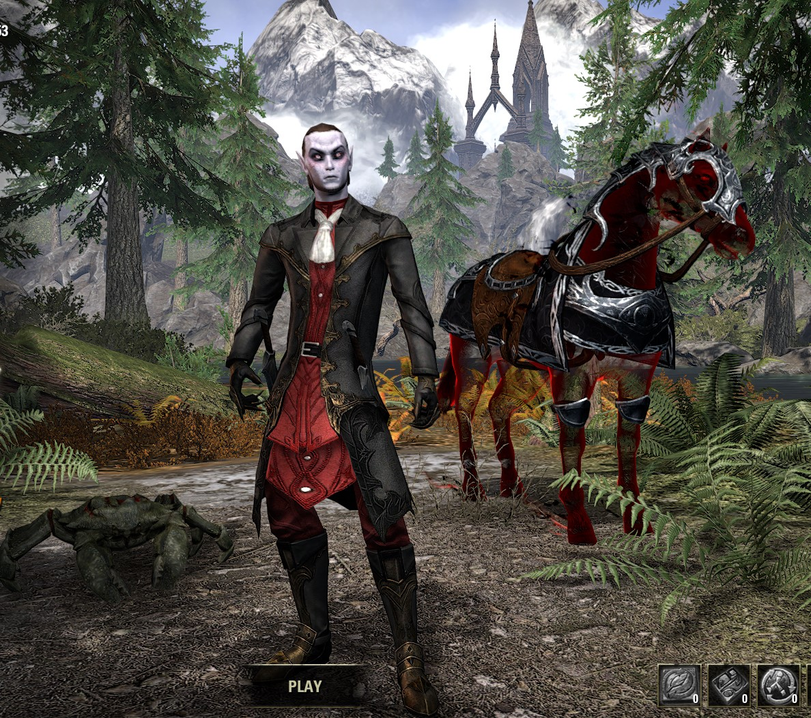
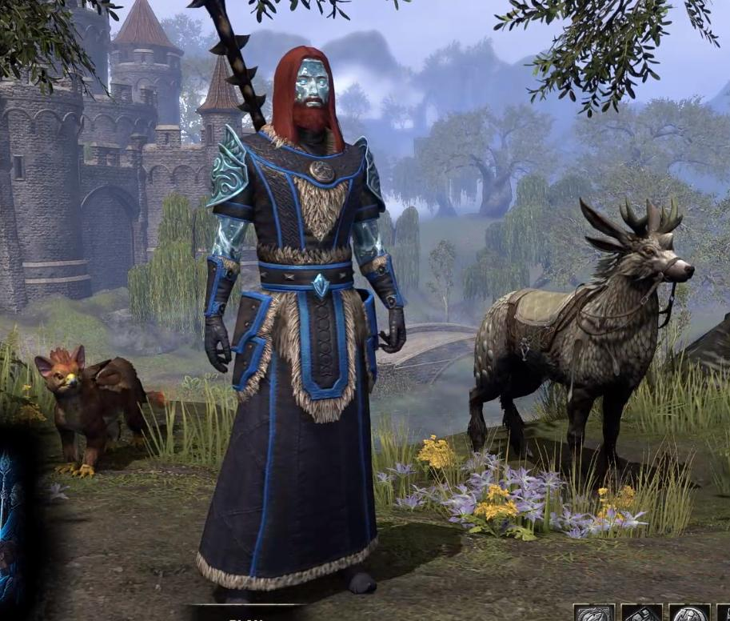
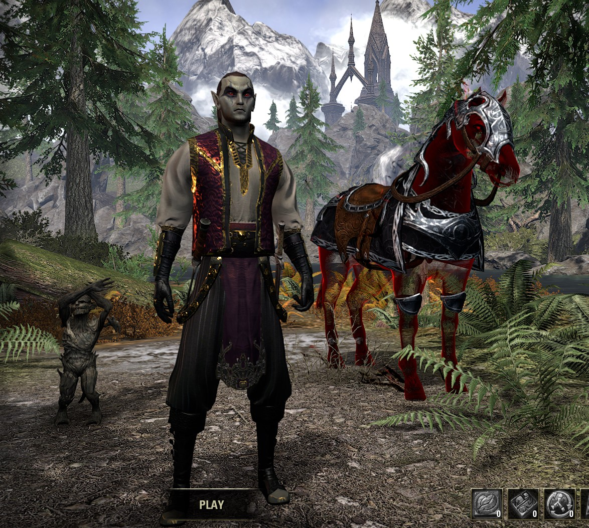
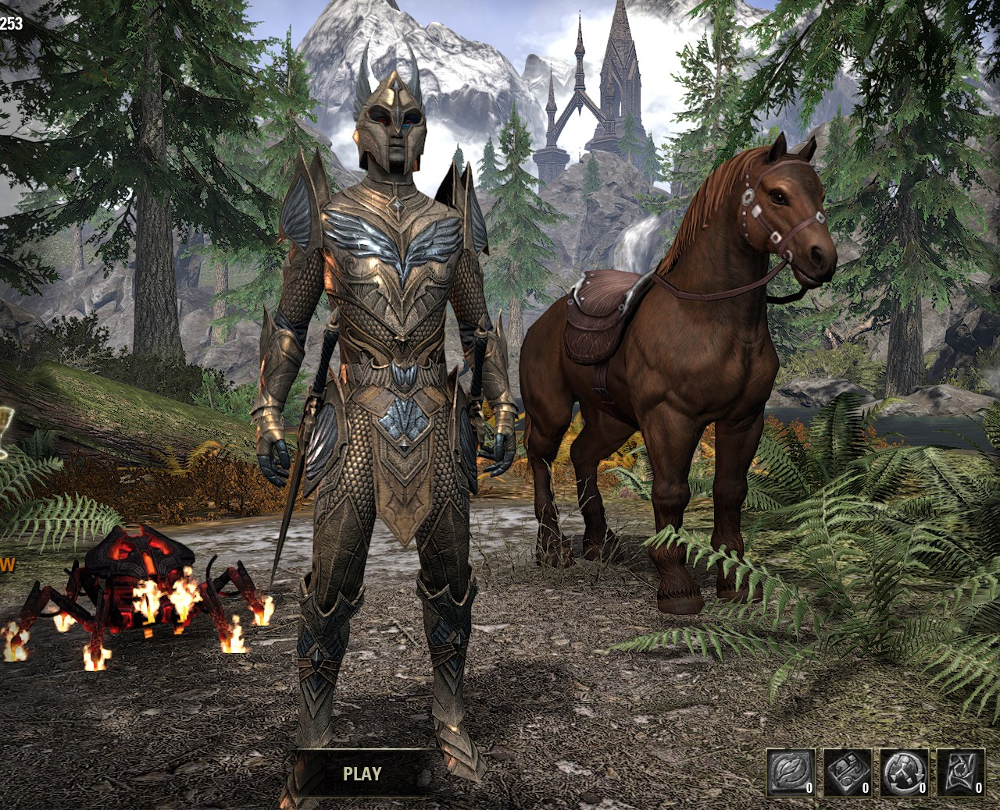

Elder Scrolls Online
This is my page on the Elder Scrolls Online. It has some useful websites and some information about my characters. I am currently CP 253.
Quentavar
Quentavar is my Sorcerer DPS. He does not do too much damage yet, but then again I am still using level 10 training gear... (my staff does 400damage...) I intend to do trials with him later on once I get him to level 50, and get him a good skillset. I already have my gear for him (I'm reusing Quaranars old DPS gear) and it is decent. I just need to get him 11 more levels. (he is level 39 ATM)
Admiral Rubbish
Admiral rubbish is a Vampire Nightblade Assassin. He is currently level 50. He is an avid member of the thieves guild, and the dark brotherhood. He is my money making character. He can also gather mats extremely fast due to his gear, and ability set. (Due to U27, he is slower due to the Rapid Maneuver change, but I am working on regaining that skill)
Quaranar (Witch Farmer)
Quaranar is my Healer Warden. At first, he was a DPS, until I found out how bad magden dps were. So now he is my healer. He is not very good, aside from being level 50. He uses 2 inferno staffs (both bars) and fights alongside his bear, and betty netch. For some reason, my sister calls him a "Witch Farmer" though..
Capt. Rubbish
Capt. Rubbish is my other nightblade. He was kind of a test nightblade and got to level 19 before I changed to Admiral Rubbish...
Captain Rubbish
Captain Rubbish is my very first character. He is a level 11 templar and I only use him for writs (740G per day...)
